I am a dentist with a designer’s brain — the kind of person who cannot look at a tool,
a workflow, or a small daily frustration without quietly redesigning it in her head.
Hi there, this is my portfolio, where I show a part of who I really am, of my identity. A part which I hold dear and feel really proud of.
Product design3D thinkingMedical insightPrototype mindsetWoodworking & making
My purpose is to be true to myself
So this portfolio is honest on purpose: it shows how I think, what I notice, what I make,
and why product design feels less like a pivot and more like finally naming the way my mind has always worked.
"To me, making things and designing products is a love letter to the world. It's my way of expressing who I am, and what I find to be my purpose in life"
About
My paradigm shift from being a practicing dentist to an aspiring product designer is more like a pattern finally becoming visible.
Dentistry taught me discipline, observation, ergonomics, and how much the smallest design decision can affect
comfort, speed, and trust. But long before the clinic, I was already drawn to mechanisms, experiments,
the logic inside objects, and what makes them tick!
What makes me who I am is not just that I want to design. It is how I notice:
I watch movement, friction, awkward steps, wasted effort, and hidden potential.
I am interested in products with intentionality behind them that feel intelligent without feeling forced.
My workflow begins from observing the tools I use
I naturally catch tiny inefficiencies and ask why they still exist.
I Never stop at just theorizing, I MAKE adjustments!
I trust sketching, testing, making, and adjusting more than abstract talk alone.
I then reflect on my ideas
My strongest ideas usually come from deep noticing, not surface-level excitement. That is how I figure out what works and what doesn't.
Every day I take a little step. Each bigger than the last.
I build with persistence. I do not give up just because the path is nonlinear.
Steps turn into strides and strides turn into leaps and that is how I make progress!
Project Glimpse
Pulp Therapy Instrument Organizer
A working prototype I designed to make pulp therapy instruments easier to access, better organized,
and more compatible with a clean, efficient clinical workflow.
Clinical Context
Why this organizer matters in practice
In dentistry we do something called pulp therapy which is a minimally invasive procedure designed to save a tooth after decay or trauma, this procedure needs a tool called a "file" which is a tiny needle that needs to be disinfected and handled with care. This needle comes in various "sizes" symbolized by numbers and colors (e.g., red file, blue file, etc).
This causes unnecessairy friction in the clinic during the pulp therapy procedure where a dentist regularly have to search for the right file for the job. This is exactly where my prototype comes in. It saves crucial time and effort in the clinic by organizing the files in a device where any file needed is a couple button presses away!
This has the advanage of preserving infection control, and the sanity of the dental specialist who has to search for the right file in a box full of them!
Live demonstration of the organizer in action. It opens muted, plays automatically, and can be unmuted directly from the player.
This project sits at the intersection of my dental background and my design instinct: identifying a precise clinical pain point,
then answering it through mechanism, enclosure, interface, and workflow.
Problem
Conventional file organizers can slow the procedure, interrupt flow, and make instrument access less intuitive during pulp therapy.
Response
I designed a digital organizer that lets the user call a chosen file through a keypad-based input and a rotating internal mechanism.
What it showcases
Clinical insight, CAD thinking, fabrication planning, electronics integration, and physical prototyping brought together in one system.
Fusion 360CAD, enclosure design, internal layout
Laser + 3D PrintPlywood enclosure with printed functional parts
Arduino ControlKeypad, LCD, buzzer, stepper and power management
How I made it
I began by defining the clinical need: a cleaner and faster way to access pulp therapy files. From there, I modeled the project in Fusion 360,
designing the enclosure, the rotating wheel, the file holders, and the support parts that would align the motor and mechanical components.
I then fabricated the enclosure in laser-cut plywood and produced the custom internal parts through 3D printing. After fabrication, I assembled the device,
wired the electronics on an Arduino-based system, and programmed the interaction between keypad input, LCD feedback, buzzer prompts, and the stepper-driven rotation.
The result is a prototype that translates a real treatment-room frustration into a tangible, functioning product.
Selected build visuals
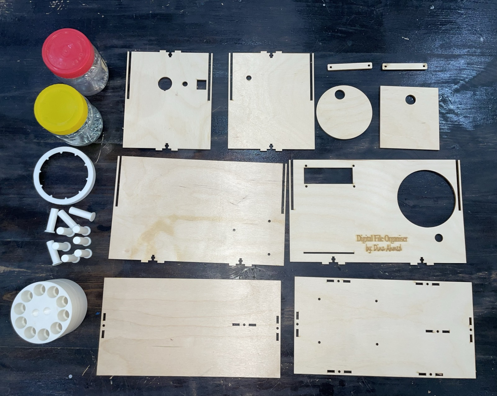
Laser-cut enclosure parts and printed components
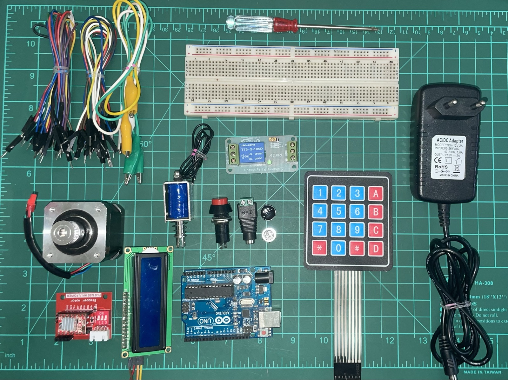
Electronic components and control hardware
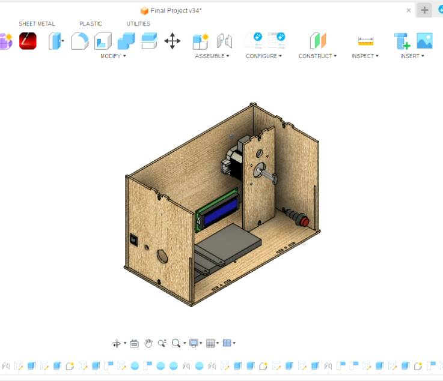
Fusion 360 enclosure and internal layout
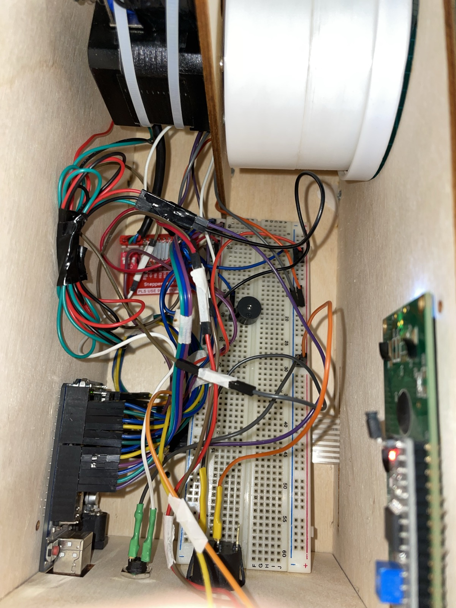
Circuit integration and internal wiring
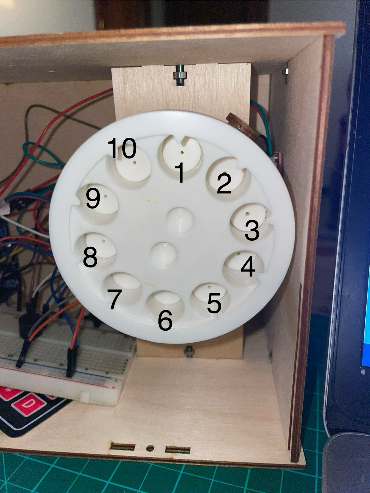
Rotating wheel designed around ten instrument positions
How it works
The organizer is built around a rotating wheel with ten fixed positions. A keypad acts as the input, while the LCD and buzzer provide feedback to the user.
Control logic
When a key is pressed, the system first returns the wheel to a known home position using a limit switch, then rotates to the requested slot so the selected file can be called consistently.
System architecture
The build combines an Arduino Uno, keypad, LCD, buzzer, stepper motor with driver, breadboard-based power rails, and a separately powered solenoid path intended to push the file outward.
What I find compelling about this project is that it is not just a box with electronics inside. It is a workflow decision translated into form:
the mechanism, the interface, and the enclosure all exist to reduce friction in a real clinical moment.
Open the full build journal
For the full process — ideation, CAD, fabrication settings, wiring, code logic, integration, and testing — see the complete journal:
Final Project Journal
Project 02
Wooden Shelving Unit — Designed, Fabricated, and Assembled from Scratch
This project began as a Fusion 360 model and developed into a full-scale wooden shelving unit through hands-on fabrication.
I translated the digital design into real material dimensions, then cut and assembled the structure myself with care for alignment, proportion, and durability.
I cut the wood using a professional table saw and worked with multiple power tools throughout the making process.
The final piece reflects both digital precision and physical craftsmanship — the moment a clean design becomes a real object you can live with.
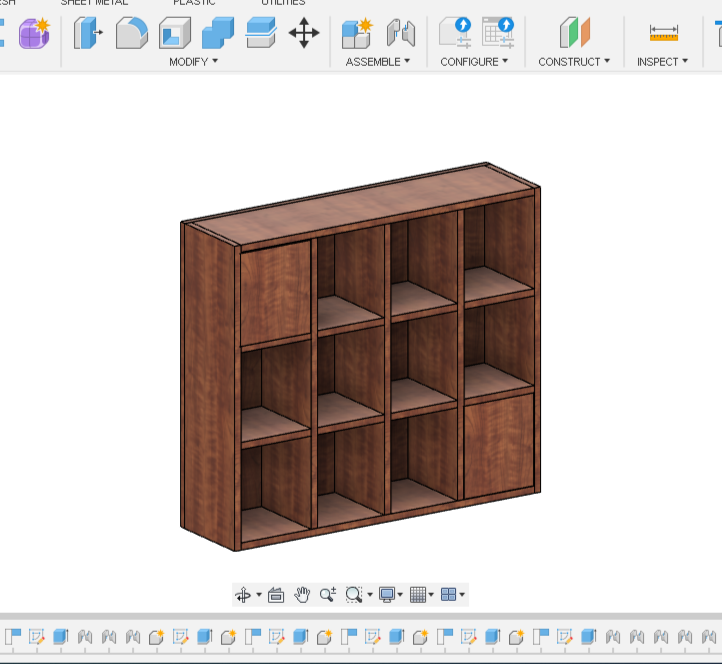
Fusion 360 design render of the shelving unit, showing the final proportions and compartment layout.
This piece represents a part of my design process I value deeply: moving from screen-based thinking into real fabrication, where measurements, material behavior, and assembly all matter just as much as the original concept.
SoftwareFusion 360
FabricationTable saw & power tools
FocusPrecision, structure, and making
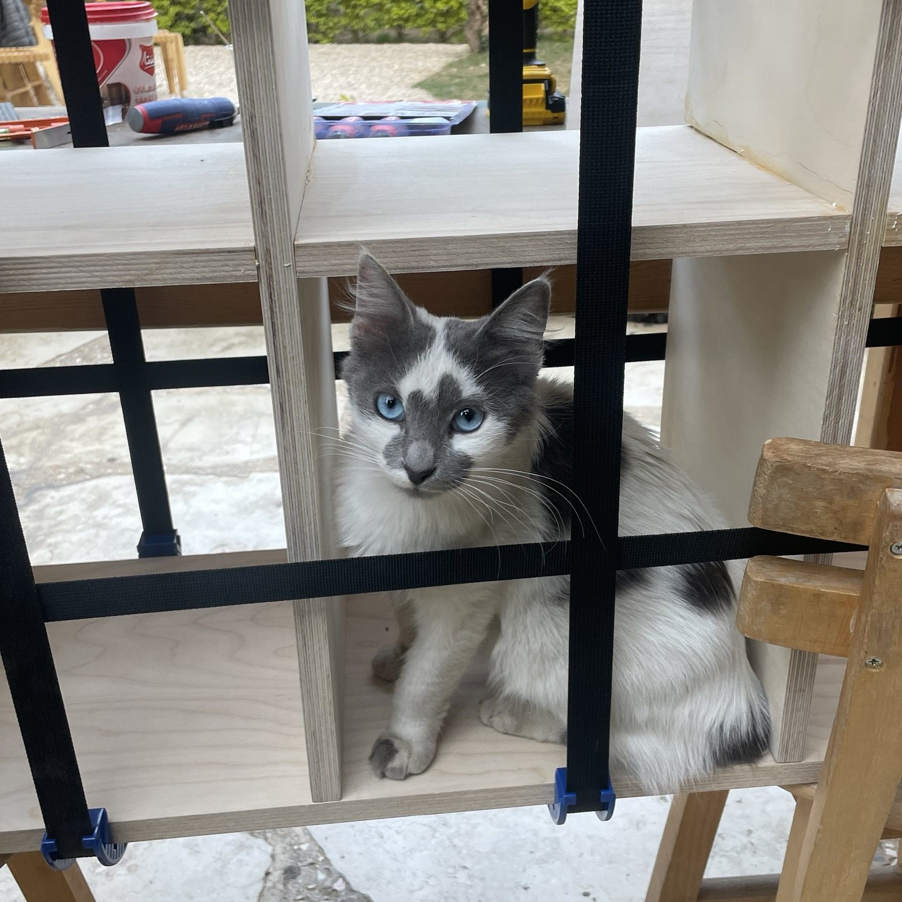
Inprogress build photo — front view
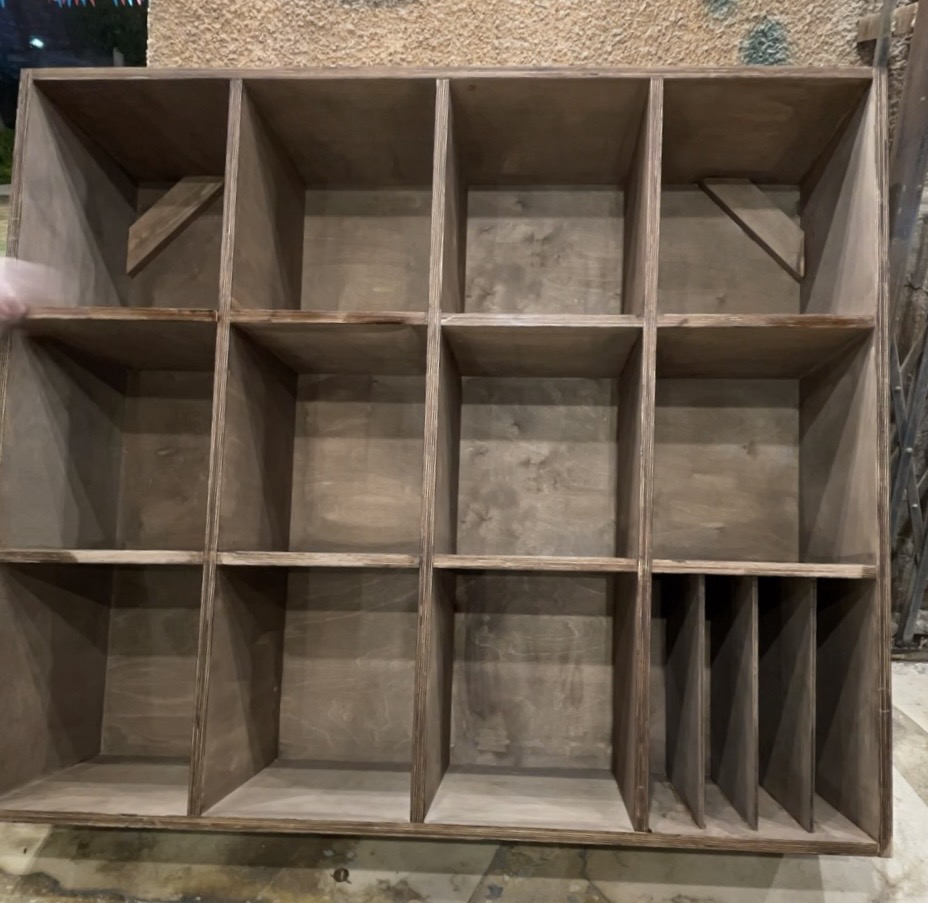
Final build photo — angled view
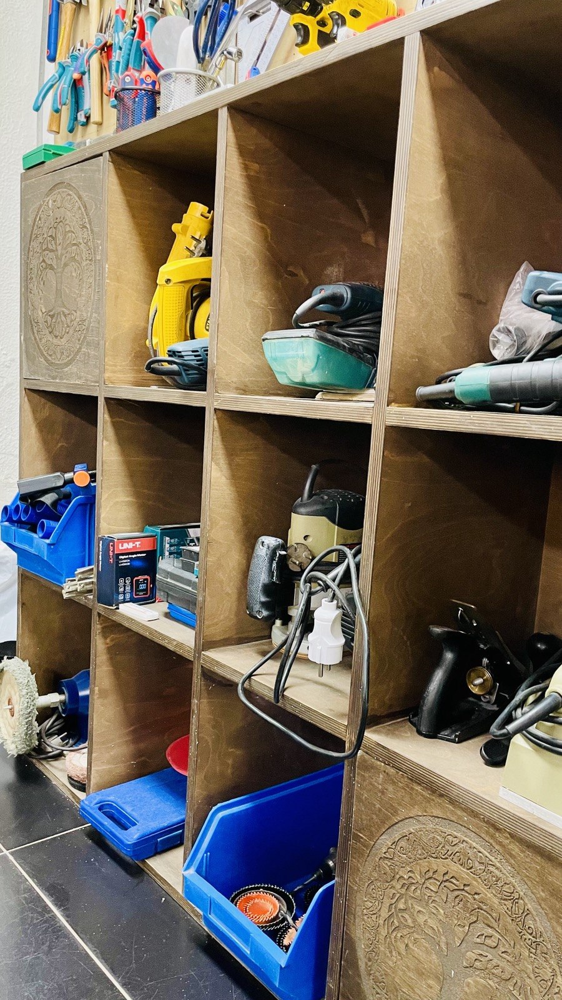
Fabrication process photo
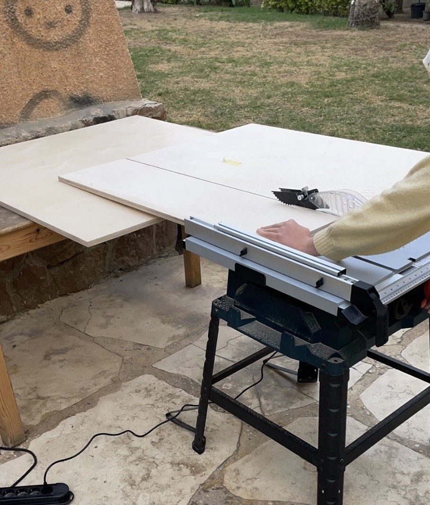
Detail / close-up photo
Project 03
Desk Organizer designed, fabricated, and assembled from scratch
A compact organizer I developed through sketching, CAD modeling, laser cutting, and final assembly.
What started as a class assignment became a functional object I customized into something personal,
with engraved details, a drawer, a note area, and upper storage for daily tools.
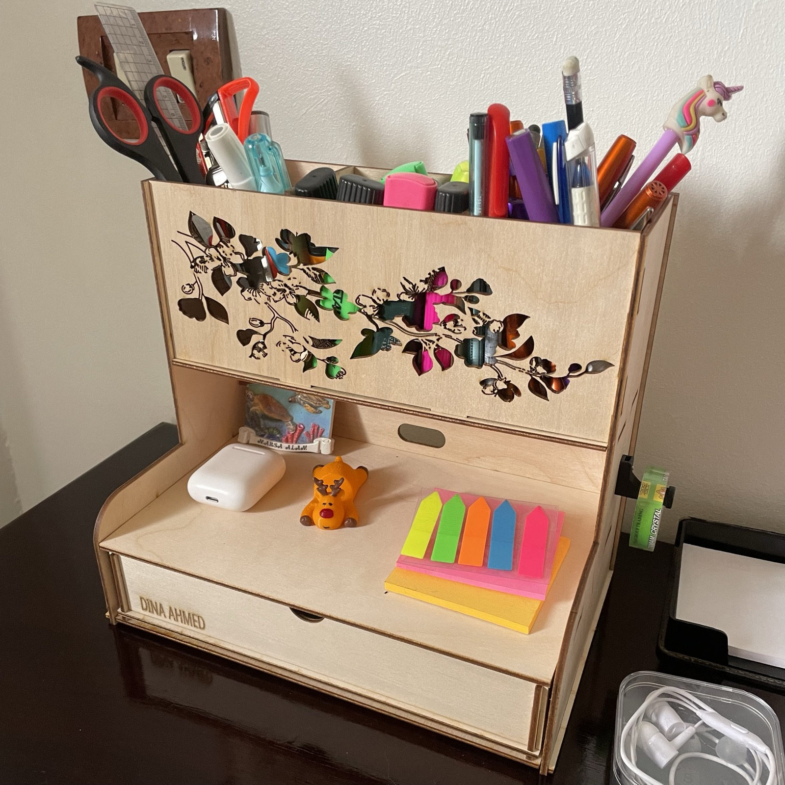
Final fabricated desk organizer designed, laser-cut, assembled, and customized for real desktop use.
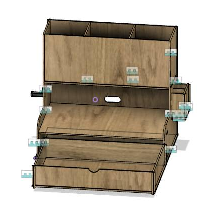
I developed it through sketching, CAD planning in Fusion 360, laser cutting, and final assembly, then customized it into a usable desk piece with upper storage, a drawer, a note area, and a more personal visual identity.
Fusion 360LaserWorksV6Laser cutting3D-printed bracket3 mm plywood
Developed from concept and sketching into a full desk organizer with multiple functional zones.
Fabricated in plywood through laser cutting, then assembled into a real working object.
Customized as a personal organizer that combines storage, display, and everyday usability.
A compact organizer designed to hold pens and sticky notes while maintaining a clean desk layout. The piece was modeled in Fusion 360 and fabricated using laser cutting on 3 mm plywood, turning a simple everyday need into a precise physical object.
Fabricated prototype showing the final assembled organizer.
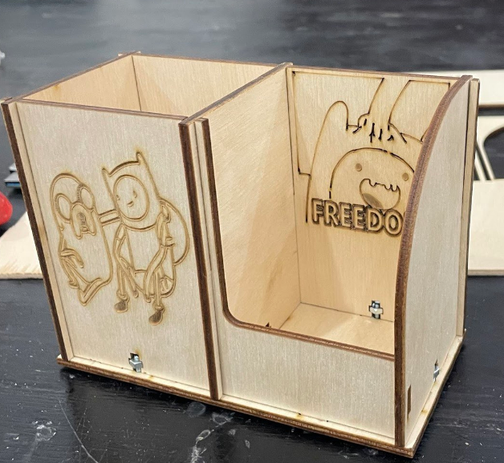
Design render showing the organizer concept and proportions.
Craft
I like work you can actually touch
I am drawn to making that leaves evidence: wood grain, engraved details, prototypes, scribbled notes, the slight imperfections
that prove an object passed through real hands before it became presentable.
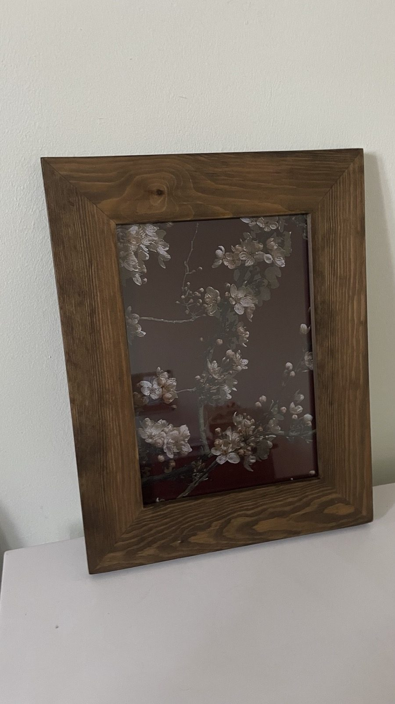
WoodworkingFinishing
Handmade wooden frame
A small piece, but an important one. It reflects a side of me that values warmth, proportion, and objects that feel personal rather than mass-produced.
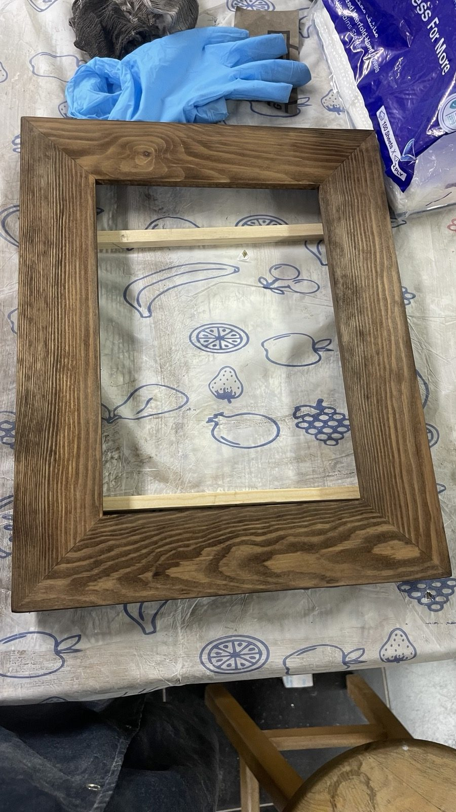
ProcessConstruction
Process over fantasy
I enjoy seeing how parts come together. Even when the outcome is simple, the making teaches me how materials behave and where precision matters.
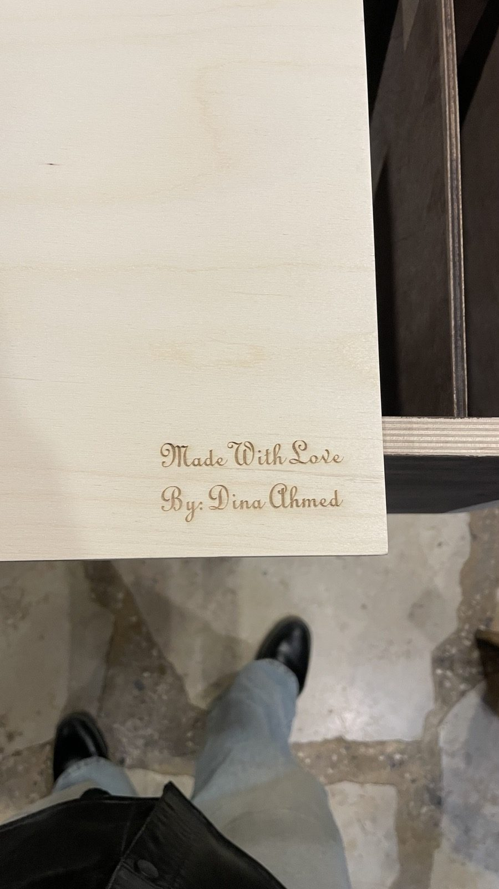
IdentityDetail
Made with love, signed with intent
I included this because it felt very me: sentimental without being careless, crafted without pretending not to care.
He who works with his hands is a laborer.
He who works with his hands and his head is a craftsman.
He who works with his hands and his head and his heart is an artist.